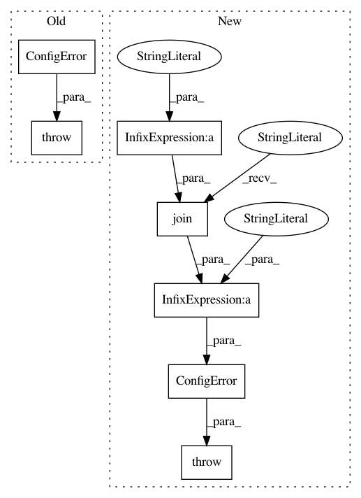

e3d4412f77e9572e792af9ca105a82c6b8c404db,anvio/tables/miscdata.py,AdditionalAndOrderDataBaseClass,__init__,#AdditionalAndOrderDataBaseClass#Any#,35
Before Change
// FIXME
self.db_path = A("pan_or_profile_db") or A("profile_db") or A("pan_db")
if not self.db_path:
raise ConfigError("The AdditionalAndOrderDataBaseClass is inherited with an args object that did not "
"contain any database path :/ Even though any of the following would "
"have worked: `pan_or_profile_db`, `profile_db`, `pan_db`, `contigs_db` :(")
// We just set the path for the database we are going to be working with. but if we seem to
// be in "gene mode", then the actual database we want to work with through this module is
// in fact the genes database, so here we will do quite a sketchy thing, and will update our
After Change
self.target_data_group = self.target_data_group_set_by_user or "default"
if not self.db_path:
raise ConfigError("The AdditionalAndOrderDataBaseClass is inherited with an args object that did not "
"contain any database path :/ Even though any of the following would "
"have worked: %s :(" % ", ".join([""%s"" % x for x in acceptable_db_inputs]))
if not self.table_name:
raise ConfigError("The AdditionalAndOrderDataBaseClass does not know anything about the table it should "
"be working with.")
In pattern: SUPERPATTERN
Frequency: 3
Non-data size: 7
Instances
Project Name: merenlab/anvio
Commit Name: e3d4412f77e9572e792af9ca105a82c6b8c404db
Time: 2020-04-28
Author: kiefl.evan@gmail.com
File Name: anvio/tables/miscdata.py
Class Name: AdditionalAndOrderDataBaseClass
Method Name: __init__
Project Name: merenlab/anvio
Commit Name: aacc3efb1db8cdf8e7aa5c85e0716f910716d9cc
Time: 2019-09-02
Author: kiefl.evan@gmail.com
File Name: anvio/drivers/sourmash.py
Class Name: Sourmash
Method Name: process
Project Name: merenlab/anvio
Commit Name: e44d8f023adb0c45ce4d88be5c671f3f3d99ea12
Time: 2020-04-28
Author: kiefl.evan@gmail.com
File Name: anvio/tables/miscdata.py
Class Name: MiscDataTableFactory
Method Name: __init__